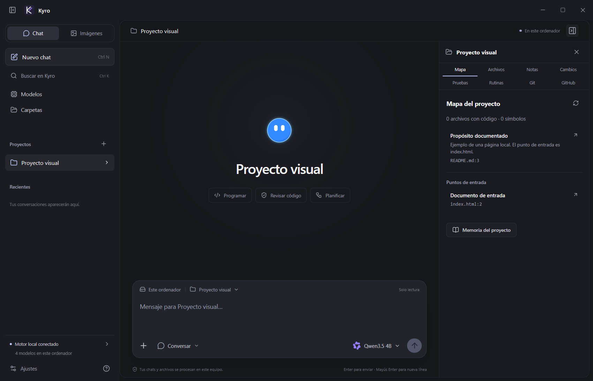

0.3.0
Gema pasa a llamarse Kyro
Kyro estrena identidad, web y un chat personal con compositor centrado. El panel de proyectos sigue disponible.
Conversa con modelos locales, trabaja en tus proyectos y crea imágenes con ComfyUI desde Kyro.

Explora archivos, abre referencias en su línea y revisa las propuestas antes de aplicarlas. Puedes anotar líneas y volver a ellas desde el panel del proyecto.
Proyectos · Archivos · Notas · Cambios
Si ya usabas Gema, el instalador actualiza esa misma instalación y conserva tus conversaciones, proyectos y preferencias.
Descargar instalador Verificación SHA-256Kyro estrena identidad, web y un chat personal con compositor centrado. El panel de proyectos sigue disponible.
ComfyUI en tu ordenador y los pesos del modelo que quieras usar. Kyro detecta Qwen Image 2512, Qwen Image Edit 2511 y checkpoints base de Stable Diffusion. Guía de ComfyUI para Windows
En Ajustes → Motor local puedes elegir la carpeta de los modelos de Ollama. ComfyUI guarda sus propios modelos en su instalación.
Una vez instalados los motores y descargados los modelos, puedes usar el chat y el estudio de imágenes con los modelos locales.